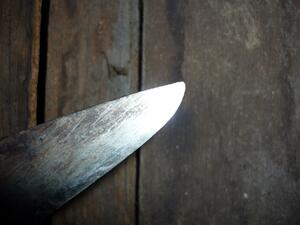

ireb 
/ʔidɔb/
n.
“tip_of_knife”
n.
the front point of a bolo ugpit or tampuling spear tip
Ka seini ne lalag iyan sika se galang diyè te irung wey pupul te ugpit, tampuling wey ke ilab naa wey ke gepes.
Amana ka ireb te ilab nu ne mahalang.
Your knife is so sharp and pointed.
Eng. spear tip; tip of knife
Online dict status: -
Usage level: M
v.
(ig-ireb, ig-) to peel (a vegetable)
Ku-a niyu pa ka ugpit diyè te leeb su ig-ireb ku te kayu ne egkaliyen ku.
Get the bolo inside the small shelter for I will point this wood for digging.
Eng. peel
Online dict status: -
Usage level: M
Updated by: RJH,AAA,QDL
Last updated: 13/Oct/2009
This page last updated: 03-Jan-2020
Copyright © 2009-2014, Matigsalug Language Christian Association, Inc